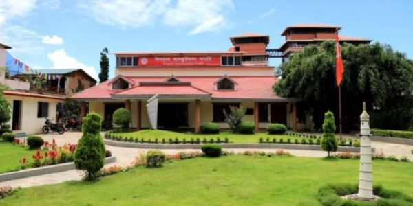

संविधान जारी नगर्न भारतले दबाब दिंदा आन्तरिक मामिलामा दख्खल नदेउ भनेर नेपालले प्रतिवाद गरेको हो । त्यसको नेतृत्व ओलीले गर्नुभएको हो । अहिले भारतले संविधानको एउटा धारा खारेज गर्दा नेपालले कसरी बोल्न मिल्छ ? किनकी यो पनि भारतको आन्तरिक मामिला हो । नेपालले त्यसमा बोल्न मिल्दैन । र, बोल्दैन ।
“संविधान निर्माण र त्यसपछिका घटनाक्रममा राष्ट्रिय स्वाधीनता र स्वाभिमानका विषयमा नेपाली जनतामा अभूतपूर्व जागरण, सजगता र एकता प्रकट भएको छ । नेपालको आन्तरिक मामलामा हस्तक्षेप गर्ने र नेपालको राजनीतिलाई समेत आफ्नो प्रभावमा निरन्तर राखिरहने वैदेशिक प्रतिक्रियावादी शक्तिहरूको व्यवहारले गर्दा नेपालले नवउपनिवेशवादी नीति र व्यवहारविरुद्ध समेत निरन्तर सङ्घर्ष गरिरहनु परेको छ ।”।
काठमाडौ,२४ साउन– नेपाल कम्युनिष्ट पार्टी नेकपाका अध्यक्ष पुष्पकमल दाहाल ‘प्रचण्ड’ले गणतान्त्रिक परिवर्तका सबै शक्तिहरु मिलेर मुलुकलाई समृद्ध बनाउनुको विकल्प नभएको बताउनुभएको छ ।
काठमाडौं, २६ साउन - विभिन्न प्रलोभन देखाई २० वर्षीया किशोरीलाई वेचविखन गर्ने उद्देश्यले लैजान लागेको अभियोगमा चन्द्रागिरी नगरपालिका-२ नागढुङ्गाबाट रामेछाप खाँडादेवी गाउँपालिका-२ घर भएका ३१ वर्षीय भुवन तमाङ र काभ्रे खानीखोला गाउँपालिका-१ घर भएका २९ वर्षीय आईते बहादुर लोप्चनलाई शनिबार साँझ प्रहरीले पक्राउ गरेको छ । विस्तृतमा पढ्नुस्
काठमाडौं, २६ साउन - चक्कु प्रहार गरी आफ्नै श्रीमानको हत्या गरेको अभियोगमा गोकर्णेश्वर नगपालिका-६ पुरानो शान्त भवन बस्ने मकवानपुर गढी गाउँपालिका-८ घर भएकी २५ वर्षीया शिला घलेलाई शनिबार साँझ प्रहरीले पक्राउ गरेको छ । विस्तृतमा पढ्नुस्
काठमाडौं, २६ साउन –प्रदेश नं. ३ की प्रदेशसभा सांसद भावना सुवेदीको पर्स लुटिएको छ । विस्तृतमा पढ्नुस्
भोजपुर, २६ साउन - जिल्लाको पूर्वी क्षेत्रमा रहेको अरुण गाउँपालिका–५ स्थित याकुलाई पूर्ण संस्थागत प्रसूति वडा घोषणा गरिएको छ । वडा क्षेत्रभित्रका सबै गर्भवती महिलाले स्वास्थ्य संस्थामै आएर सुरक्षित प्रसूति गराएकाले एक कार्यक्रमको आयोजना गरी वडालाई पूर्ण संस्थागत प्रसूति वडा घोषणा गरिएको हो । विस्तृतमा पढ्नुस्
काठमाडौं, २४ साउन– ललितपुर महानगरपालिकाले खरिद गरेका दुइ वटा ब्रमुर र दुइ वटा पानी ट्याङ्कर आजदेखी सञ्चालनमा आएका छन् । विस्तृतमा पढ्नुस्
दमौली, २४ साउन - ‘पर्यटन विकास एउटै लक्ष्य : म्याग्दे गाउँपालिकाको उज्ज्वल भविष्य’ मूल ध्येयका साथ तनहुँको म्याग्दे गाउँपालिकाले आवधिक पर्यटन विकास योजना निर्माण गरेको छ । विस्तृतमा पढ्नुस्
हवाना, २६ साउन - क्युबाका राष्ट्रपति मिगेल डायाज–केनेलले अमेरिका समेतका पश्चिमी मुलुकको बहिस्करणमा परेको भेनेजुएला सरकारमाथि पुनः समर्थन जनाउनुभएको छ । विस्तृतमा पढ्नुस्
म्यानमार, २६ साउन - म्यानमारमा बाढी पहिरोमा परेर मृत्यु हुनेको संख्या ४८ पुगेको छ । बाढी पहिरोमा परेकाहरुको खोजी तथा उद्धार गर्ने क्रममा आइतबार ब्हिानसम्म ४८ जनाको मृत्यु भएको पुष्टी भएको हो । विस्तृतमा पढ्नुस्
वासिङ्टन, २६ साउन - हालै गरिएका क्षेप्यास्त्र परीक्षणलाई लिएर उत्तर कोरियाली सर्वोच्च नेता किम जङअनले सामान्य क्षमायाचना गरेका अमेरिकी राष्ट्रपति डोनाल्ड ट्रम्पले शनिबार बताउनुभएको छ । विस्तृतमा पढ्नुस्
काठमाडौं, २६ साउन - विभिन्न प्रलोभन देखाई २० वर्षीया किशोरीलाई वेचविखन गर्ने उद्देश्यले लैजान लागेको अभियोगमा चन्द्रागिरी नगरपालिका-२ नागढुङ्गाबाट रामेछाप खाँडादेवी गाउँपालिका-२ घर भएका ३१ वर्षीय भुवन तमाङ र काभ्रे खानीखोला गाउँपालिका-१ घर भएका २९ वर्षीय आईते बहादुर लोप्चनलाई शनिबार साँझ प्रहरीले पक्राउ गरेको छ । विस्तृतमा पढ्नुस्
काठमाडौं, २६ साउन - चक्कु प्रहार गरी आफ्नै श्रीमानको हत्या गरेको अभियोगमा गोकर्णेश्वर नगपालिका-६ पुरानो शान्त भवन बस्ने मकवानपुर गढी गाउँपालिका-८ घर भएकी २५ वर्षीया शिला घलेलाई शनिबार साँझ प्रहरीले पक्राउ गरेको छ । विस्तृतमा पढ्नुस्
काठमाडौं, २६ साउन –प्रदेश नं. ३ की प्रदेशसभा सांसद भावना सुवेदीको पर्स लुटिएको छ । विस्तृतमा पढ्नुस्
भोजपुर, २६ साउन - जिल्लाको पूर्वी क्षेत्रमा रहेको अरुण गाउँपालिका–५ स्थित याकुलाई पूर्ण संस्थागत प्रसूति वडा घोषणा गरिएको छ । वडा क्षेत्रभित्रका सबै गर्भवती महिलाले स्वास्थ्य संस्थामै आएर सुरक्षित प्रसूति गराएकाले एक कार्यक्रमको आयोजना गरी वडालाई पूर्ण संस्थागत प्रसूति वडा घोषणा गरिएको हो । विस्तृतमा पढ्नुस्
काठमाडौं, २४ साउन– ललितपुर महानगरपालिकाले खरिद गरेका दुइ वटा ब्रमुर र दुइ वटा पानी ट्याङ्कर आजदेखी सञ्चालनमा आएका छन् । विस्तृतमा पढ्नुस्
दमौली, २४ साउन - ‘पर्यटन विकास एउटै लक्ष्य : म्याग्दे गाउँपालिकाको उज्ज्वल भविष्य’ मूल ध्येयका साथ तनहुँको म्याग्दे गाउँपालिकाले आवधिक पर्यटन विकास योजना निर्माण गरेको छ । विस्तृतमा पढ्नुस्
हवाना, २६ साउन - क्युबाका राष्ट्रपति मिगेल डायाज–केनेलले अमेरिका समेतका पश्चिमी मुलुकको बहिस्करणमा परेको भेनेजुएला सरकारमाथि पुनः समर्थन जनाउनुभएको छ । विस्तृतमा पढ्नुस्
म्यानमार, २६ साउन - म्यानमारमा बाढी पहिरोमा परेर मृत्यु हुनेको संख्या ४८ पुगेको छ । बाढी पहिरोमा परेकाहरुको खोजी तथा उद्धार गर्ने क्रममा आइतबार ब्हिानसम्म ४८ जनाको मृत्यु भएको पुष्टी भएको हो । विस्तृतमा पढ्नुस्
yanfianfiaonfonaofnonaofian